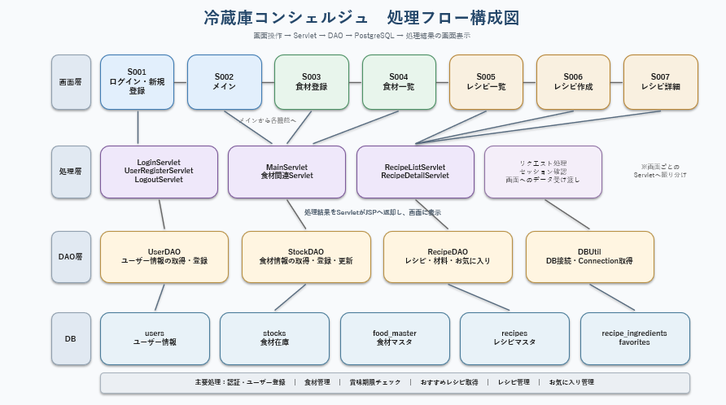
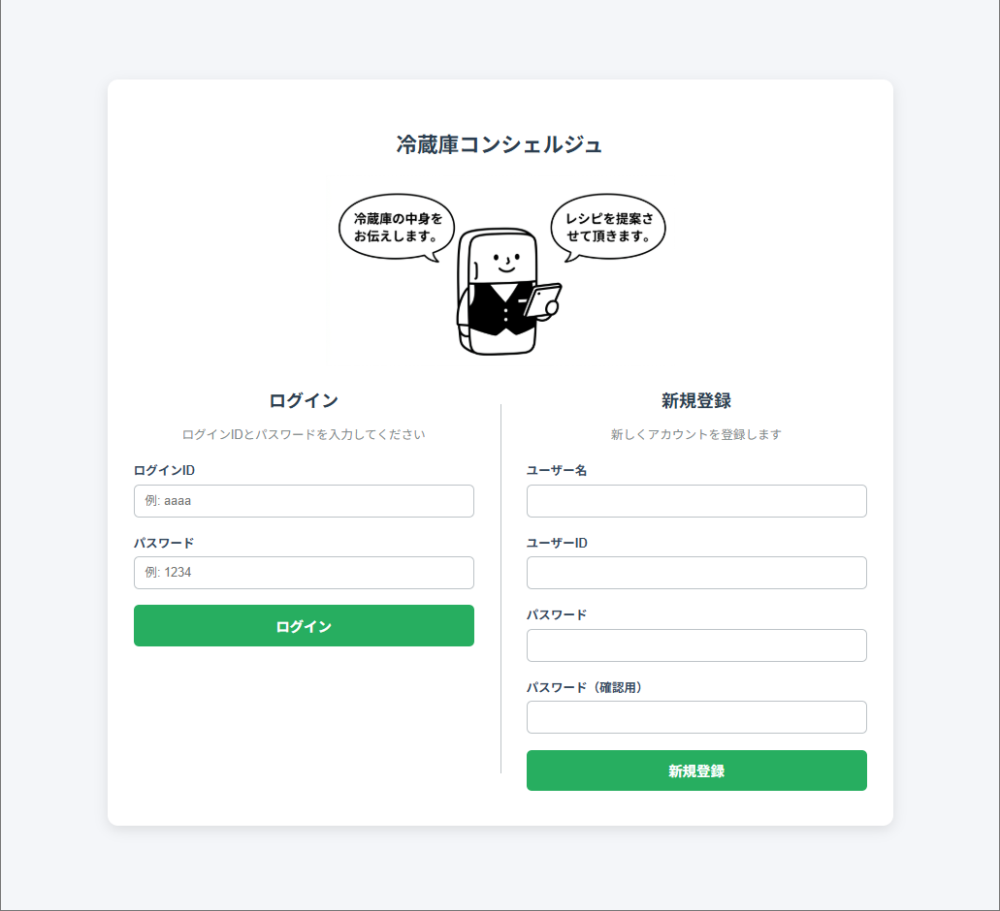
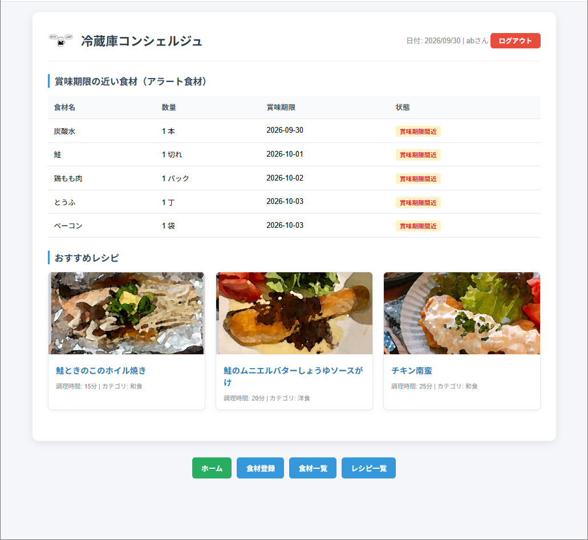
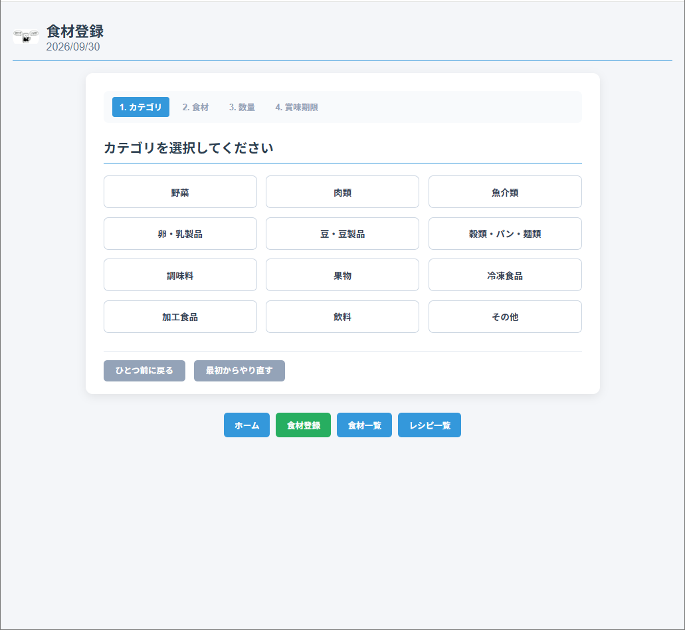
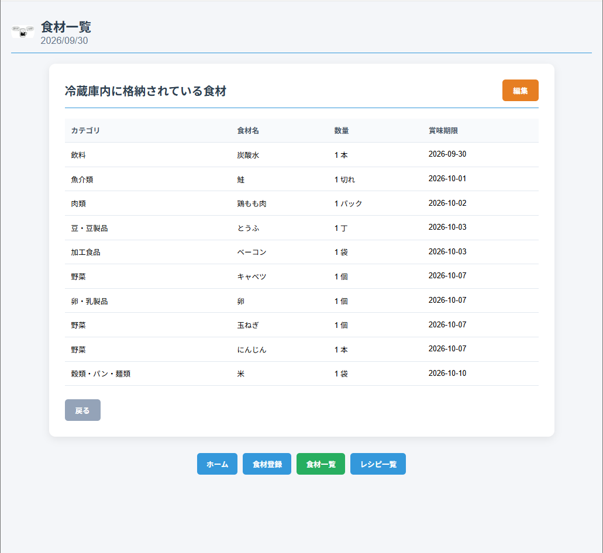
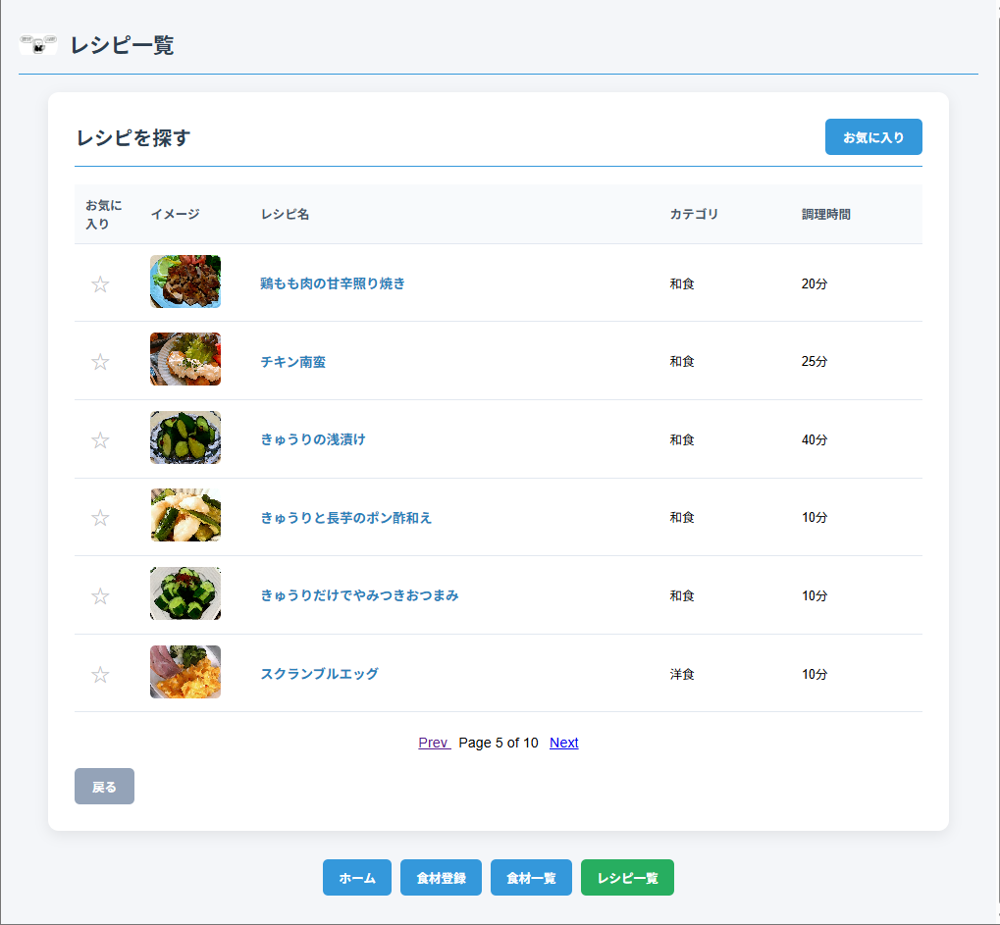
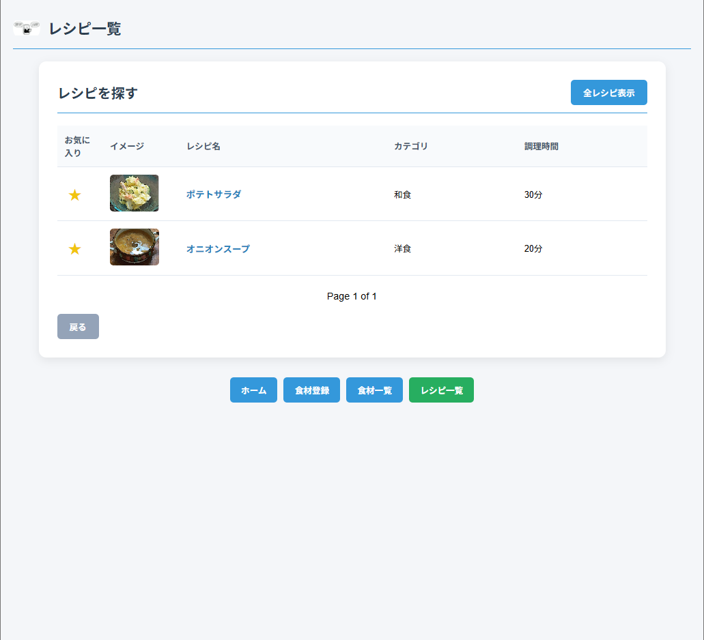
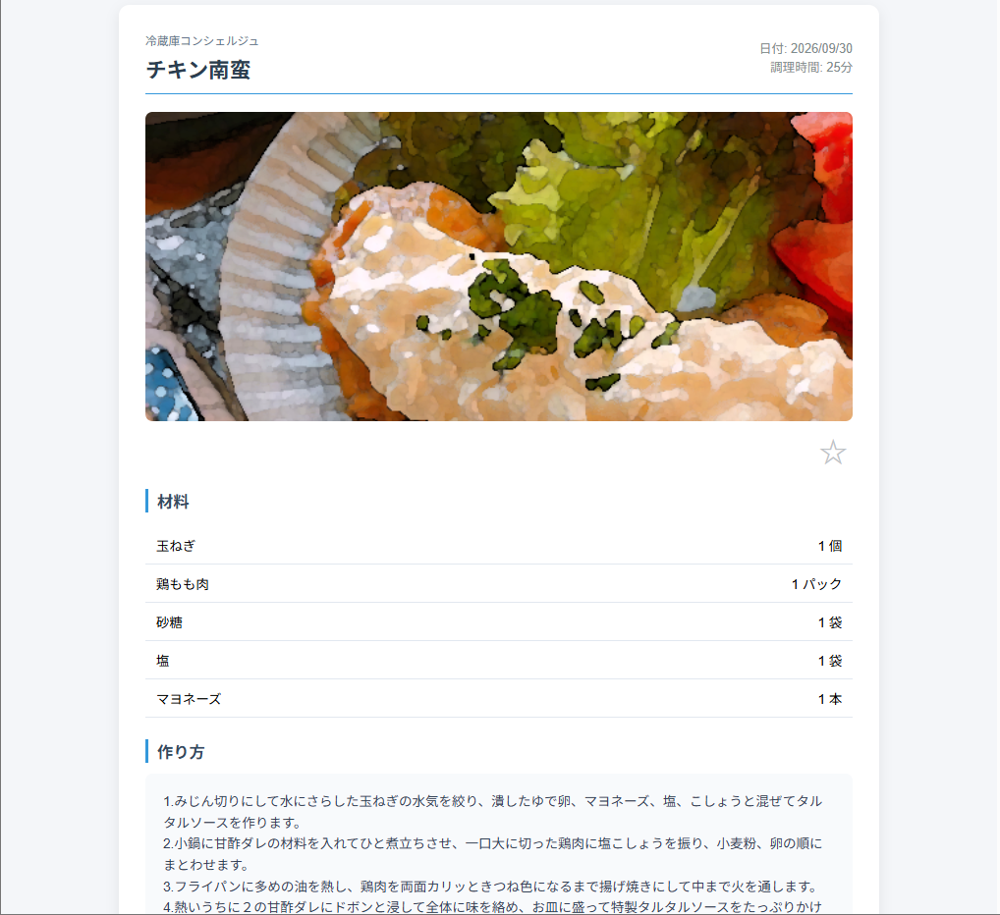
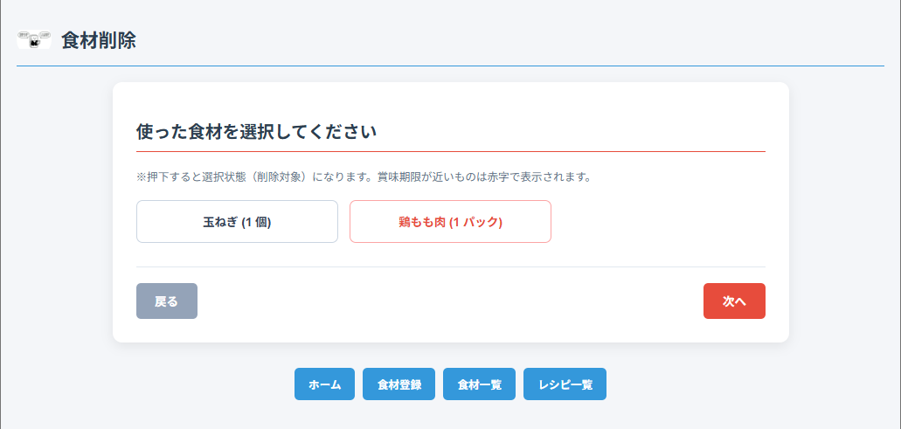

１．【プロジェクト概要】
(1) 背景
家庭内における食材の買いすぎや、賞味期限切れに伴うフードロス（食品廃棄）が社会的な課題となっています。
日本のフードロス発生量は年間約472万トン（令和4年度推計）とされており、その内訳について事業系と家庭系がほぼ半々となっています。
(2) 目的
家庭で保管している食品をWeb上で管理し、食品の数量や賞味期限を把握できるようにする。
(3) 目標
登録された食品をもとにレシピを検索・推薦し、食品の使い忘れや賞味期限切れによる廃棄を削減する。
(４) ターゲットユーザ
- 自炊の頻度が高く、自宅の食品管理や毎日の献立作りに悩んでいる一般ユーザ
- 共働き世帯、単身世帯、およびフードロス削減や家計節約に対する意識の高いユーザ
(５) 処理イメージ

２．【技術スタック】
| レイヤ | 技術 | 備考 |
|---|---|---|
| バックエンド | Java | 主要なビジネスロジックの構築。 |
| フロントエンド | HTML / CSS | 画面描画。 |
| データベース | PostgreSQL | ユーザ、在庫、レシピ履歴等の管理。 |
３．【データ要件】
| 論理テーブル名 | 物理テーブル名 | 役割・主な保持情報 |
|---|---|---|
| ユーザ | users | ログイン認証情報。 |
| 在庫一覧 | stocks | 現在の冷蔵庫内在庫情報。 |
| 食材マスタ | food_master | 食品名称の辞書データ。ユーザ入力文字列と食品名称を紐付け、カテゴリや賞味期限を補完。 |
| レシピマスタ | recipes | レシピの全体・基本情報。 |
| レシピ食材 | recipe_ingredients | 登録された食材（在庫一覧）とレシピマスタの間を取り持ち、各レシピに必要な食材との紐付けを行う。 |
４．【サイト構成】
本サイトは8画面・機能を基本構成としています。
- （1）ログイン画面：ユーザテーブルに登録されたユーザの認証を行う。（認証成功後に「メイン画面」へ遷移、ログアウト後はここへ戻る。）
- （1-2） 新規ユーザ登録: ログインID・パスワード入力によるアカウント追加（重複不可、ハッシュ化保存）
- （2）メイン画面：各画面（新規登録画面、在庫確認画面、レシピ一覧画面）への遷移ボタン。在庫一覧テーブルを参照し、賞味期限が2日以内の食材をアラート表示。
- （3）食材登録画面：食品の新規登録を行う専用画面。入力済食品編集機能を持つ。
- （4）食材一覧画面：在庫一覧テーブルに登録されている現在保有食品の一覧表示、直書きでの編集・更新、チェックボックスによる削除を行う画面。
- （5）レシピ一覧画面：レシピマスタテーブルに登録しているレシピの全名称が表示される画面。
- （6）お気に入りレシピ画面：過去にお気に入り保存したレシピを一覧表示する画面。
- （7）レシピ詳細画面：レシピマスタテーブルで登録されたレシピ内容が表示される画面。
- （8）食品削除画面：レシピ等で実際に調理・消費した食品をボタン選択して在庫一覧テーブルから削除（消費）する専用画面。
５．【機能要件】
(1) ログイン画面
(1-1) ユーザ認証・DB接続
- ログイン時に行うユーザIDとパスワードの認証にはユーザテーブルを使用する。
- ユーザテーブルに登録されているユーザのみ承認する。
- 初期のテスト用アカウント「ログインID：aaaa」、「パスワード：1234」でログインする。
- 今後の拡張機能として、ユーザをログインID、パスワードで管理していく。
(1-2) 画面遷移制御
- 認証成功時：「メイン画面」へ遷移する。
- 認証失敗時：エラーメッセージ「ログインID・パスワードを確認してください」を表示し、再度「ログイン画面」を表示する。
(1-3) 新規ユーザ登録
- 新規ユーザ登録: ログインID・パスワード入力によるアカウント追加（重複不可、ハッシュ化保存）
- ログイン・セッション管理: ログインIDとパスワードによる照合・認証状態の保持
(2) メイン画面
(2-1) セッション制御・共通機能
- ログイン認証を経由せずに「メイン画面」へ遷移した場合、「ログイン画面」へリダイレクトする。
- ログアウト機能：「ログアウト」ボタン押下時にログイン内容を破棄し、「ログイン画面」へ遷移する。
(2-2) ダッシュボード機能
- 各画面（「新規登録」、「在庫確認」、「レシピ一覧」）へ、遷移ナビゲーションボタンを配置する。
(2-3) アラート機能
- 当日の日付を表示し、賞味期限日が2日前以下の食品（アラート食品）を一覧（食品名・個数・消費期限）として優先表示する。
(3) 新規登録画面
(3-1) 食品情報の登録機能
以下の項目を入力・編集し、在庫一覧テーブルへ保存できること。
- 食品名：テキスト手入力（具体名）。
- 種別（カテゴリ）：カテゴリ選択（魚 / 肉 / 野菜 / お菓子 / 嗜好品）。
- 数量：直接入力またはボタンで1ずつ増減（基本的に「ある＝1」「ない＝0」で管理する）。
- 賞味期限：直接入力またはカレンダーから選択、記載の無いものは入力日基準で自動入力（西暦）。
(3-2) 賞味期限の自動算定機能（未入力時）
- 種別が「野菜」の場合：登録日（基準日）から+7日（1週間後）の日付が自動的に初期値として設定・入力される。
- 種別が「野菜以外」の場合：登録日を初期値として表示。
(3-3) ボタン・ダイアログ処理（登録・キャンセル）
- 登録ボタン：押下時、登録確認ポップアップを表示する。
- 「はい」選択時：在庫一覧テーブルへ登録し、メイン画面へ遷移する。
- 「いいえ」選択時：入力内容を保持したまま登録画面にとどまる。
- キャンセルボタン：未登録情報を一括で破棄・削除する。
(3-4) 食品情報の編集機能
- 登録済みの食品一覧から対象を選択し、数量・賞味期限等の更新を行う。
(3-5) 明細の削除機能
- 食品一覧の各行先頭にある「削除」チェックボックスを選択することで、対象行の入力内容を破棄（削除）対象とする。
(4) 在庫確認画面
(4-1) 在庫一覧表示機能
- 在庫一覧テーブルに格納されている現在保有中の食品一覧を表形式で表示する。
- 初期状態（閲覧モード）:
- 誤操作防止のため一覧の内容は編集不可（ロック状態）とする。
- 画面上には「編集」ボタンおよび「戻る」ボタンのみ表示し、「更新」ボタンおよび「キャンセル」ボタンは表示しない（非表示）。
(4-2) 編集・モード切り替え機能
- 編集ボタン:
- 押下すると編集モードへ切り替わり、登録内容の編集が可能となる。
- 各行の左側に「削除」用チェックボックスが操作可能状態として表示される。
- 編集モード切り替えに伴い、「編集」ボタンが非表示となり、画面下に「更新」ボタンおよび「キャンセル」ボタンが表示される。
- キャンセルボタン:
- 押下時、編集中の内容および削除選択を破棄し、更新を行わずに初期状態（閲覧モード：編集ボタンのみ表示）に戻す。
- 削除チェックボックス:
- 各行の「削除」チェックボックスを選択すると、該当の食品行を画面上で削除候補にする。
(4-3) 更新・削除処理およびポップアップ制御
- 更新ボタン:
- 押下時、更新確認ポップアップ（「更新しますか？」）を表示する。
- 更新確認ポップアップ:
- 「はい」選択時:
- 削除対象行がある場合、対象行を在庫一覧テーブルから削除する。
- 編集内容がある行の変更情報を在庫一覧テーブルへ反映する（削除対象行の編集内容は破棄）。
- 処理実行後、「更新中」ポップアップを表示する。
- 削除・編集の操作がない場合は、ポップアップを閉じて編集機能を無効化する。
- 「いいえ」選択時: 更新確認ポップアップを閉じる。
- 「はい」選択時:
- 更新中ポップアップ: 在庫一覧テーブルの更新処理実行中に表示する。
- 更新成功ポップアップ: データ更新が成功した際、「更新しました」と表示する。
- 更新失敗ポップアップ: データ更新が失敗した際、「データの更新に失敗しました。再度更新してください。」と表示する。「OK」ボタン押下ですべてのポップアップを閉じる。
(4-4) 画面遷移機能
- 戻るボタン：編集の場合、画面遷移確認ダイアログを表示する。「OK」ボタンを押下すると、直前に表示されていた画面へ遷移する。
(5) おすすめレシピ画面
(5-1) アラート食品表示機能
- 在庫一覧テーブルから、賞味期限が本日＞＝3日以下の食品を含むアラート食品（本日の賞味期限の近い食品）を表示する。
(5-2) レシピ自動検索・表示機能
- 条件に該当するおすすめレシピを自動抽出して最大3件表示する。
- 抽出条件: アラート食品を使用したレシピを優先してすべて表示する。アラート食品がない場合は、在庫一覧テーブルのうち当日を起点に賞味期限が近い食材を使用したレシピを3件表示する。
- 優先順位ルール: 優先順位1（当日を起点に賞味期限日を迎えるのが早い食品を使用したレシピ）、優先順位2（賞味期限を迎える食品の種類が多いレシピ）とし、同順位の場合は優先順位2を適用する。
- 表示されたレシピカードを選択・クリックすると、レシピ詳細画面に遷移する。
(5-3) レシピのアクション機能（お気に入り・調理実行）
- お気に入りボタン（☆/★）：
- レシピ詳細内の「☆」ボタンを押下すると、表示が「★」に切り替わり、該当レシピがお気に入りとして登録保存される。
- 「★」ボタンを再度押下すると、表示が「☆」に戻り、お気に入り登録が解除される。
- 「作」（作った）ボタン：実際にレシピを作成・調理した場合に押下する。押下時、「食品削除画面」へ遷移する。
(5-4) 画面遷移機能
- レシピ一覧ボタン：データベースに登録されている全レシピを参照・検索するための「レシピ一覧画面」へ遷移する。
- お気に入りボタン：過去にお気に入り登録したレシピ一覧を確認するための「お気に入りレシピ一覧画面」へ遷移する。
- 戻るボタン：「メイン画面」へ遷移する。
(6) 食品削除画面
(6-1) 消費食品一覧表示機能
- 対象レシピIDに紐づく「レシピ食材」と「在庫一覧」の食材IDが一致する食品を一覧表示する。
- 賞味期限アラート対象の食品は赤文字ボタン、アラート対象外の食品は黒文字ボタンで区別して表示する。
- 同一食品で登録日が異なる場合、登録されている個数分だけ個別のボタンとして表示する。
(6-2) 食品選択・解除処理（グレーアウト機能）
- 各食品ボタンを押下するとグレーアウト（選択状態）となり、消費・使い切った状態として設定される。
- 選択状態で再度押下すると、選択が解除される（複数選択可能）。
(6-3) 次へボタン押下時のポップアップ判定処理
「次へ」ボタン押下時、選択状態（グレーアウト）の食品有無に応じて以下のポップアップを表示する。
- 選択あり：「6.1 削除確認ポップアップ」を表示する。
- 選択なし：「6.2 削除対象なしポップアップ」を表示する。
【ポップアップ処理仕様】
- (6-1) 削除確認ポップアップ（選択食品あり時）
- 表示条件: グレーアウトされた食品が存在する状態で「次へ」を押下した場合。
- メッセージ: 「選択した食品を削除しますか？」
- 「はい」押下時: 「6.3 更新中ポップアップ」を表示し、選択された食品を在庫一覧テーブルから削除する処理を実行する。
- 「いいえ」押下時: ポップアップを閉じ、同一画面（食品削除画面）に留まる。
- (6-2) 削除対象なしポップアップ（選択食品なし時）
- 表示条件: グレーアウトされた食品がない状態で「次へ」を押下した場合。
- メッセージ: 「チェックされていませんがよろしいでしょうか？」
- 「はい」押下時: ポップアップを閉じ、「おすすめレシピ画面」へ戻る。
- 「いいえ」押下時: ポップアップを閉じ、同一画面（食品削除画面）に留まる。
- (6-3) 更新中ポップアップ
- 表示条件: 削除確認ポップアップで「はい」を押下後、データ更新処理中に表示。
- 処理内容: 在庫一覧テーブルの更新・削除処理を実行する。
- (6-4) 更新成功ポップアップ
- 表示条件: データ送信・更新処理が正常完了した場合。
- メッセージ: 「更新しました」
- 処理内容: 「OK」ボタン押下後、ポップアップを閉じ、「メイン画面」へ遷移する。
- (6-5) 更新失敗ポップアップ
- 表示条件: データ送信・更新処理が異常終了した場合。
- メッセージ: 「データの更新に失敗しました。再度更新してください。」
- 「OK」ボタン押下時: ポップアップを閉じる。
(7) レシピ一覧画面
(7-1) レシピ一覧表示機能
- データベースの「レシピマスタ」に格納されたすべてのレシピ情報（イメージ図、レシピ名称）を表形式で一覧表示する。
(7-2) お気に入り登録機能
- 各レシピ明細の左側に「☆」または「★」ボタンを表示する。
- 「☆」ボタン押下時: 表示が「★」に変更され、対象レシピがお気に入りとして登録される。
- 「★」ボタン押下時: 表示が「☆」に変更され、対象レシピのお気に入り登録が解除される。
(7-3) 画面遷移機能
- レシピ名称クリック: 該当レシピのレシピIDをスコープとして保持し、「レシピ詳細画面」へ遷移する。
- 戻るボタン: 「おすすめレシピ画面」へ遷移する。
(8) お気に入りレシピ画面
(8-1) お気に入りレシピ一覧表示機能
- 画面表示時点でお気に入りとして登録されているレシピを一覧表示する（イメージ図、レシピ名称）。
- 初期状態の表示順はお気に入り登録日時の昇順とし、各レシピに「★」ボタンを表示する。
(8-2) お気に入り解除・再登録機能
- 「★」ボタン押下時: 表示が「☆」に変更され、対象レシピのお気に入り登録が解除される。
- 解除操作後も同一画面上では即時非表示にはせず、ページ遷移するまで表示を継続する。
- 画面から別ページへ遷移した後、再度本画面を表示した際には、解除されたレシピは一覧から除外される。
- 「☆」ボタン押下時: 解除した状態で再度「☆」を押下した場合、表示が「★」に戻り、対象レシピが再度お気に入りとして登録される。
(8-3) 画面遷移機能
- レシピ名称クリック: 該当レシピのレシピIDをスコープとして保持し、「レシピ詳細画面」へ遷移する。
- 戻るボタン: 「おすすめレシピ画面」へ遷移する。
(9) レシピ詳細画面
(9-1) レシピ詳細情報表示機能
- 画面遷移時に受け取った「レシピID」（スコープ処理）に該当するレシピ情報を、レシピマスタテーブルから取得して表示する。
- 表示項目：レシピ名、イメージ図、材料詳細、作成手順。
(9-2) 画面遷移機能（閉じるボタン）
- 本画面への遷移時に動的に遷移元画面の情報を保持する。
- 「閉じる」ボタン押下時: 保持した遷移元情報に基づき、元の画面へ遷移（戻る）処理を行う。
- 「レシピ一覧画面」から遷移した場合 ➔ レシピ一覧画面へ戻る
- 「お気に入りレシピ一覧画面」から遷移した場合 ➔ お気に入りレシピ一覧画面へ戻る
６．【画面イメージ】
6.1 ログイン画面

6.2 メイン画面

6.3 食材登録画面

6.4 食材一覧画面

6.5 レシピ一覧画面

6.6 お気に入りレシピ一覧画面

6.7 レシピ詳細画面

6.8 食品削除画面

７．【拡張機能】
(1) 最安値食材自動取得・表示機能（Webスクレイピング）
- 情報自動収集: Seleniumを活用し、指定地域に対応するネットスーパー・Webチラシの価格データを取得
- 最安値判定・表示: 単価比較による最安値食材の自動算出および画面一覧表示
(2) 賞味期限リマインドメール配信機能
- 通知メール送信: 期限が近い食材（例: 2〜3日前、当日）のリストをユーザ宛に配信